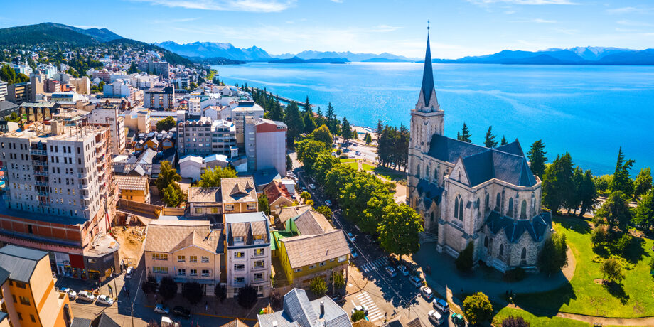

BIENVENIDOS A VIAJES HORIZONTE
Somos una empresa dedicada a crear experiencias turísticas simples,
seguras y memorables para familias, estudiantes y viajeros que quieren conocer nuevos lugares. Nuestro
objetivo es ayudarte a planificar cada viaje con información clara sobre destinos, actividades y
recomendaciones útiles para disfrutar al máximo.
En esta página te mostramos algunos destinos populares de Sudamérica que
combinan naturaleza, historia y cultura. La idea es inspirarte para tu próxima aventura y ofrecerte una guía
inicial para empezar a organizar tu recorrido.
Conocer más opciones de
viaje
Bariloche

Bariloche es uno de los destinos más visitados del sur argentino
por su combinación de paisajes de montaña, lagos cristalinos y bosques. Durante todo el año ofrece
actividades para distintos gustos: caminatas, paseos en bicicleta, excursiones en barco y visitas a
miradores con vistas panorámicas.
Además de su naturaleza, la ciudad tiene una propuesta gastronómica
muy reconocida, especialmente por su chocolate artesanal y sus casas de té. Es un lugar ideal para quienes
buscan descansar, hacer turismo fotográfico y disfrutar de un entorno tranquilo con aire puro.
Más información sobre Bariloche
- Subir al Cerro Campanario
- Recorrer el Centro Cívico
- Probar chocolate artesanal
Río de Janeiro

Río de Janeiro es una ciudad vibrante que mezcla naturaleza urbana,
playas extensas y una identidad cultural muy fuerte. Sus paisajes entre montañas y mar la convierten en un
destino atractivo para turistas que desean conocer lugares icónicos y vivir una experiencia dinámica.
La ciudad también destaca por su vida cultural, su música y su
ambiente festivo. Recorrer sus barrios, visitar sus miradores y caminar por sus playas permite conocer
diferentes caras de Río, desde zonas tradicionales hasta sectores modernos con gran actividad turística.
Sitio oficial de turismo de Río
- Visitar el Cristo Redentor
- Caminar por Copacabana
- Conocer el Pan de Azúcar
Cusco

Cusco fue la capital del Imperio Inca y hoy es uno de los centros
históricos más importantes de América Latina. Sus calles de piedra, iglesias coloniales y restos
arqueológicos muestran la mezcla entre herencia andina y arquitectura española.
Muchos viajeros eligen Cusco no solo por su valor histórico, sino
también porque funciona como punto de partida para conocer el Valle Sagrado y Machu Picchu. Es un destino
ideal para aprender sobre cultura, historia y tradiciones locales mientras se recorre una ciudad llena de
vida.
Más información sobre Cusco
- Recorrer la Plaza de Armas
- Visitar Sacsayhuamán
- Planear una excursión a Machu Picchu